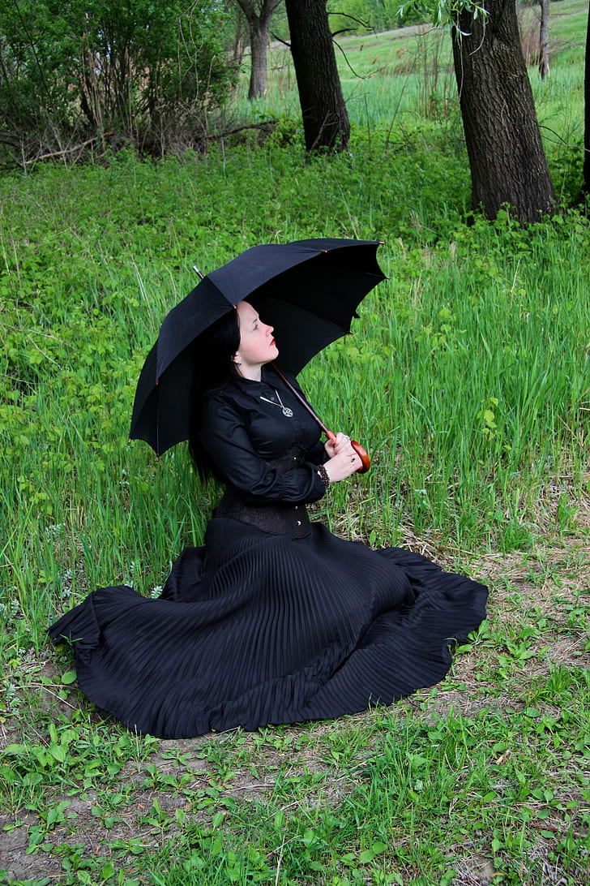

Julio Herrera y Reissig es uno de los mayores genios de la literatura uruguaya que ha sido influenciado por el pensamiento romántico, el surrealismo y un decadentismo moderno.
Misántropo de cuerpo y espíritu, sus historias surgen de la burlada esperanza del ser humano, todo ello cuando la inocencia es cruelmente herida por la vil razón, que termina lamiendo las cicatrices con la acida saliva de la resignación.
Desde muy joven, Julio Herrera y Reissig fue un lector voraz e incansable, un amante incondicional del universo literario y un adicto a las drogas como método de creación literaria y como un escape a una realidad no compartida por su espíritu.
Herrera y Reissig, a lo largo de su vida sufrió fuertes crisis cardíacas, presagio de la brevedad de su existencia. Fue un gran soñador, inconformista y animador de una tertulia literaria en el desván de su casa, conocido en los cenáculos literarios como "La torre de los panoramas" y donde además se practicaba el espiritismo para invocar a los muertos del vecino cementerio central de Montevideo, mientras el humo del opio provocaba bocanadas de eterna melancolía.
Sus dolencias, no tardaron en empujar a Herrera y Reissig al uso de estupefacientes.
"No soy un vicioso. Cuando tengo que escribir algún poema en el que necesito volcar todo mi ser, todo mi espíritu, toda mi alma, fumo opio, bebo éter y me doy inyecciones de morfina. Pero eso lo hago cuando tengo que trabajar. Los paraísos artificiales son para mí un oasis", contaba Rubén Darío que su admirado Julio decía.
I.
Decíale muy a menudo:
–¿Me amas, es cierto, di?
–Te adoro, Laura querida –contestábale suspirando, y recogía amorosamente aquella dulce cabeza de hada, posándole besos mudos, insistentes, llenos de mimo. En las tardes taciturnas, bajo la triste sugestión de un cielo amarillo, sentábanse sobre la hierba, junto al pequeño lago del parque, y la inmóvil pesadumbre de los pinos, recostados en el horizonte, allá a lo lejos, llenábalos de inercia, de una vaga pereza fúnebre. Interrumpiendo un largo mutismo se inclinaba ella, gorjeándole: –¿Me amas, es cierto, di? –Te adoro, Laura querida.
Y ya de vuelta al castillo, en el ambiente embalsamado de los jardines moribundos, el idilio se deshojaba en besos mudos insistentes, llenos de mimo.
Oh, nadie se le parecía, nadie era tan hermosa, con excepción de una hermana –pensaba Carlos– entre las cuales antes de adorar a Laura, vaciló un momento, hasta que una glorieta muda y un traje lila con encajes negros le decidieron por la pobre tísica, que mucho antes del primer beso ya le gorjeara: –“¿Me amas, es cierto, di?”
¡Oh, sí, la amaba! ¡Cómo hubiera podido pasarse sin esos ojos ebrios de noche, ojos de cisterna en que sus asiáticas melancolías bebieron de lo Infinito, basta inmergirse en el Gran Todo, que es todo Amor!... Y esos labios de escarlata místico, dueños del beso sin fondo, con erudiciones pitagóricas inmateriales. Ah! ¡Cómo no amarla, cómo no adorarla, si sabía callar tan bien!... Y luego, ¡aquella glorieta, y el traje lila con encajes negros! Era además una santa. Y nadie, fuera de Violeta, se le parecía. Rezaba muy a menudo, sin dejar por eso de toser...
Violeta, su hermana única, jamás los acompañé en los paseos crepusculares hasta el cercano lago del parque, por no pasar junto a la glorieta y ver a Laura con su traje lila, diciendo a Carlos: – ¿Me amas, es cierto, di?... Violeta siempre lloraba acariciando a Olímpica, su gata de miradas parecidas a las de Carlos. Era Violeta por demás huraña, muda y sombría con sus tristes ojos de violeta.
A pesar de quererla mucho, no podía ver feliz a Laura, la cual le robara a Carlos, con un simple traje lila de encajes negros, bajo la marquesina de una glorieta. Sus celos eran lilas.
Cierta vez díjole al cura: ‘Padre Bernardo, tengo un gran pecado mortal... Y echóse a llorar diciendo:
Adoro a un esposo ajeno, al esposo de una hermana mía... pero no me dé, Padre, la penitencia de ir a la glorieta…
–¿Me amas, es cierto, di? –Te adoro mucho, mi amor y Laura, lentamente, con una vaga pereza fúnebre, pasábase el pañuelo por sus labios de escarlata místico, dueños del beso sin fondo, y a cada golpe de tos, su pañuelo constelado de estrellas rojas era tomado por Carlos, quien uniera sus lágrimas indiscretas a la preciosa sangre de la víctima. Luego, besábalo en silencio, murmurando: ¡Laura!
Los paseos no eran tan frecuentes. Dejaron de ir al lago. Llegó el Otoño. Zumbaba el viento. Y Olímpica, cuyas miradas se parecían cada vez más a las del pobre Carlos, ganó la estufa. Todo agonizaba. La Muerte sacudía su gran ala lívida en los ventanales del castillo. Una enorme luna espectral muequeó en el horizonte su augurio fúnebre, y el esqueleto de la glorieta llamaba a Laura.
Laura se moría. Las horas eran eternas. Su cabeza de oro sonámbulo pesaba como una montaña sobre el hombro de aquel mártir mudo. ¡Infeliz! Ya nadie le preguntaría, excepto la glorieta: –¿me amas, es cierto, di?... Y el traje lila, arrumbado en un rincón del ropero, se ajaría de vejez precoz, al verse sin su dueña triste, la que sabía callar tan bien... ¡y era además una santa!
–¿Me amas, es cierto, di? –exclamó por última vez Laura, estrechando a Carlos contra su seno.
–Te adoro infinitamente, te adoro, Laura querida.
Y ambos murieron, uno más que el otro, en un beso mudo, tenebroso, eterno.
II.
Violeta cumplía su penitencia en la glorieta, llorando amargamente, y acompañada de Olímpica, cuando llegó Carlos tambaleándose, con la expresión de un idiota. No pudo hablar. Al ver a su cuñada con el traje lila de encajes negros, se derrumbó sordamente, agitándose breves instantes y traspasando el silencio con gruñidos de epilepsia. ¡Había visto a Laura!
Durante mucho tiempo anduvo Carlos como un loco, con obsesiones de suicidio, paseándose por los jardines meditabundo y sin atreverse a llegar al lago por miedo de que Laura se le apareciese como en la glorieta.
No tenía más sed que devorar sus lágrimas entre el pañuelo en que la pobre muerta dejara en besos su sangre, aquella sangre preciosa.
–¡Laura! Laura! –repetía– ¿Que si te amo, dices? ¡Oh, sí, te adoro, te adoro mucho! Y lloraba con más fuerza, siempre lloraba. Observó una vez que Violeta besaba al gato en los ojos, diciendo: “Carlos ¡cuánto te amo! ¡Cuánto he sufrido!” Indignóse en un principio, viendo que no era por Laura por quien Violeta lloraba... Mas, otra vez, mirando a Violeta notó que la tristeza de ésta mitigaba la suya propia. Violeta era casi Laura. Le faltaba el nombre y apenas el traje lila con encajes negros, bajo la marquesina de la glorieta. Llegó octubre. La infeliz adoraba a Carlos, y seguía por tanto haciendo penitencia... Sentía los mismos celos, celos siempre lilas. Una tarde de primavera, ciñóse, aunque llorando mucho, el traje lila con encajes negros y apareciéndose a Carlos, éste le dijo: –¿Violeta, quieres reemplazarla? Nuestros temores son hermanos... ¡Estando juntos no tendremos miedo! –
Ella guardaba silencio, ebria de un goce tenebroso y frío. Carlos cogióle una mano, la estrechó luego, púsole el anillo y un beso largo, diciendo: ¡Sea!
Al poco tiempo se efectuó la boda. Al abrazarlos el Padre Bernardo díjoles: ¡Laura os bendice!
Violeta era casi Laura, con su traje lila de encajes negros, en la glorieta primaveral. No obstante adorar a Carlos seguía siempre llorando. Tenía celos de Laura, celos lilas, celos de luto. Un día le dijo: – Carlos, ¿es cierto que la amabas mucho? –¡Mucho! –contestóle Carlos. Desde ese día Violeta vagaba huraña, muda siempre, con sus tristes ojos de violeta, acompañada de Olímpica. Guardó para siempre el traje lila; destruyó la pobre glorieta. Carlos iba comprendiendo y desde entonces nunca habló de Laura...
Prodigaba a cada instante besos a Violeta, viéndola sufrir (bajo sus pestañas siempre abatidas) y sin que sus halagos remediasen nada. A los celos lilas, agregóse un nuevo martirio: un concentrado remordimiento por el mal hecho a Laura en vida, y lo que es grave, después de muerta. Su delgadez era mucha. De tanto pensar en el traje lila sus ojeras se pusieron lilas. Y Olímpica las contemplaba con los tristes ojos de Carlos.
Una tarde lloró más que nunca, una tarde mustia de otoño, aniversario inquietante de la muerte de su dulce hermana. El cielo estaba mortalmente lila, en el fondo, allá a lo lejos, mirando para la glorieta. Halló en el jardín a Carlos, sentado sobre la hierba en el sitio en que la glorieta fuera feliz en un tiempo. Reposó su frente junto a la del joven, quien, invadido por una extraña melancolía, soñaba en Laura, mirando al ciclo como distraído, con su pobre cara de idiota. Luego de un largo silencio, díjole Violeta: –¿Me amas, es cierto, di? – Te adoro, Laura querida, eternamente te adoraré.
Sin que Carlos se diese cuenta, con su pobre cara de idiota, soñando en Laura, mirando al cielo, ella alejóse llorando, llorando fatigosamente, meciéndose la cabellera; con sollozos interminables. Bien lo veía, Carlos amaba a Laura. Corrió a encerrarse en su pieza. Y arrodillándose, bajo las lágrimas, besó un retrato de Laura, la cual sonrióle sin rencor alguno. Púsose en pie. Ya serena, iluminada por extraño goce: –¡Me ha perdonado! –se dijo.
Luego, vestida con el traje lila de encajes negros, volvió a donde estaba Carlos, el cual lloraba sobre el pañuelo en que la pobre muerta dejara en besos su sangre, aquella sangre preciosa. Idéntica a su hermana, tenía la misma cabeza, la misma taciturnidad, las mismas manos siempre cruzadas, manos deploradoras, hechas para el perdón y para la súplica, los mismos labios de escarlata místico, dueños del beso sin fondo... Y era además una santa.
Aproximóse suavemente, y dejando desmayar un beso, díjole: – ¡Carlos! voy a pedirte tina cosa. –¿Qué es lo que quieres, Violeta? –interrumpióle Carlos, con la voz ahuecada por el mucho llanto:
–Quiero... quiero... ¡que desde hoy me llames Laura!
© 2025 Ciudad de Sombras - Todos los derechos reservados